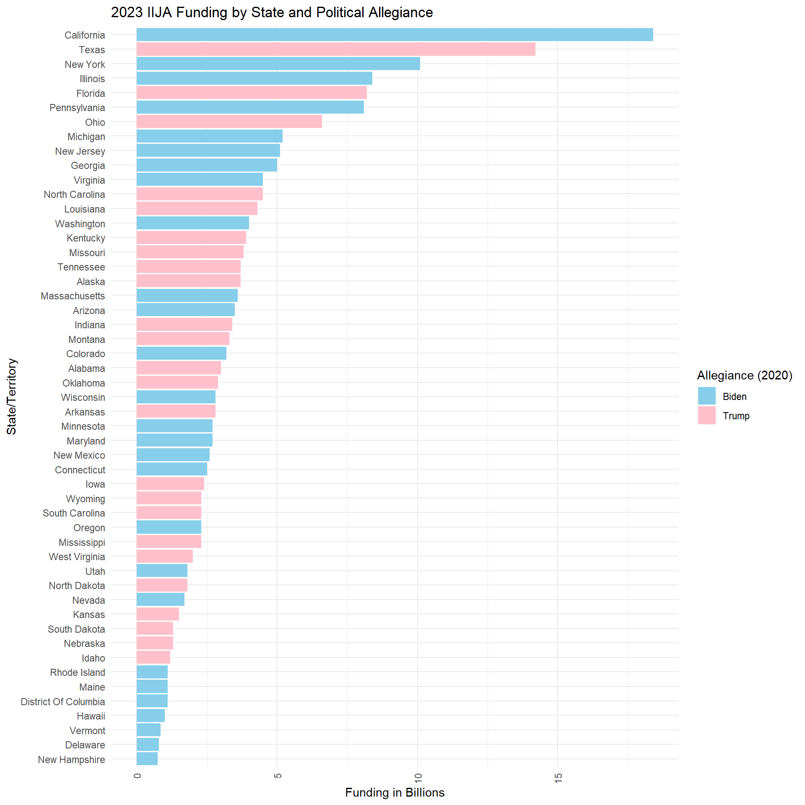
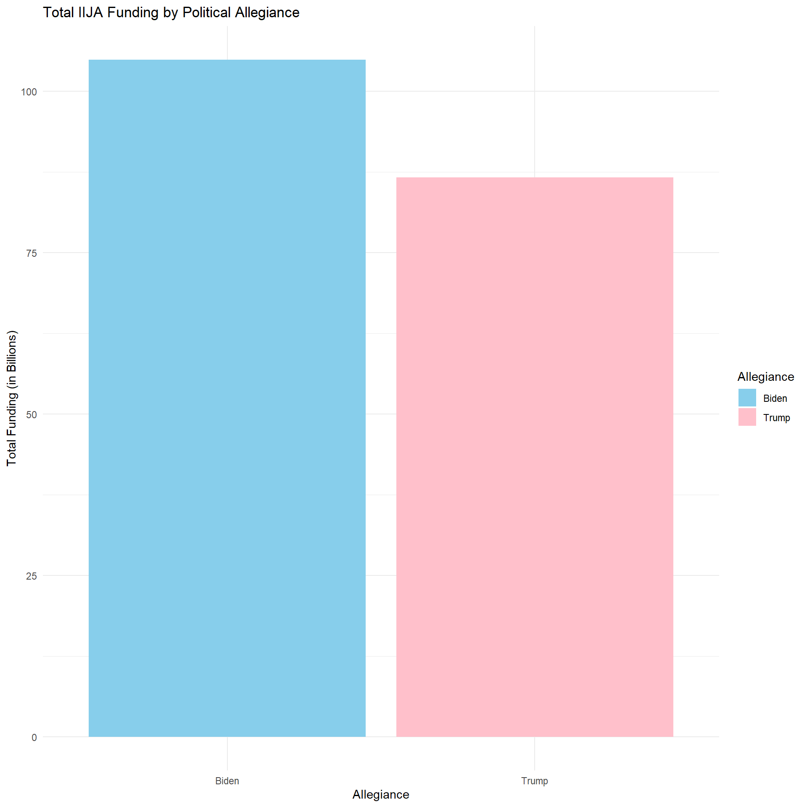
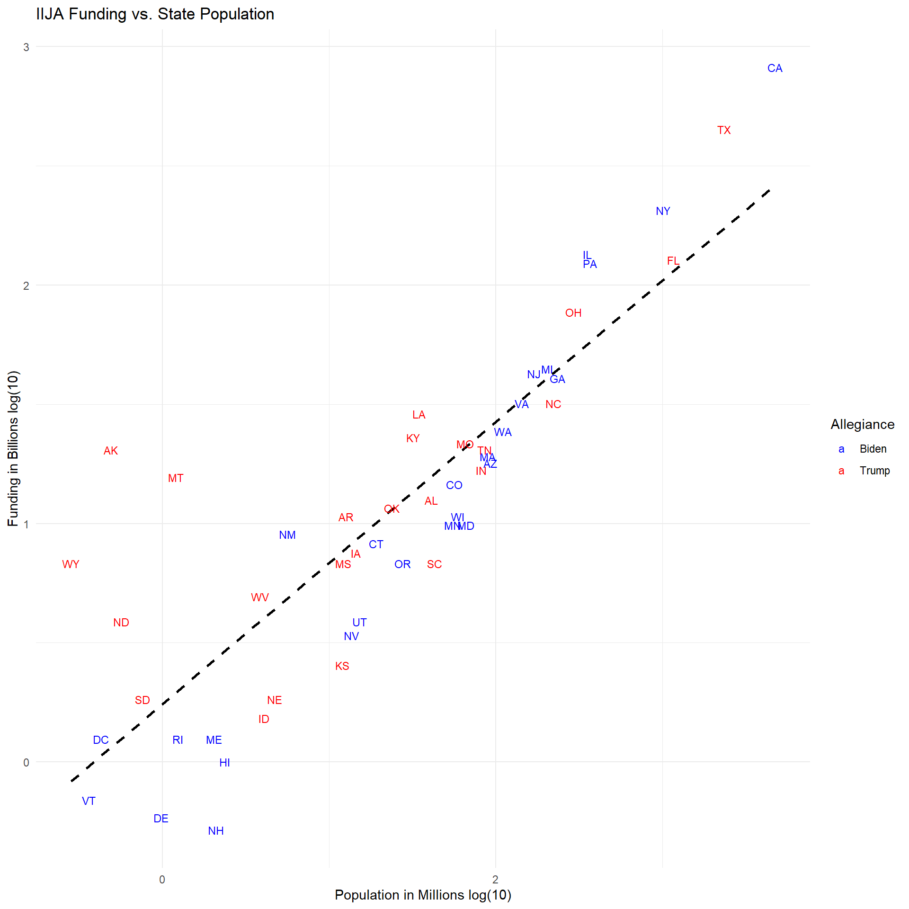
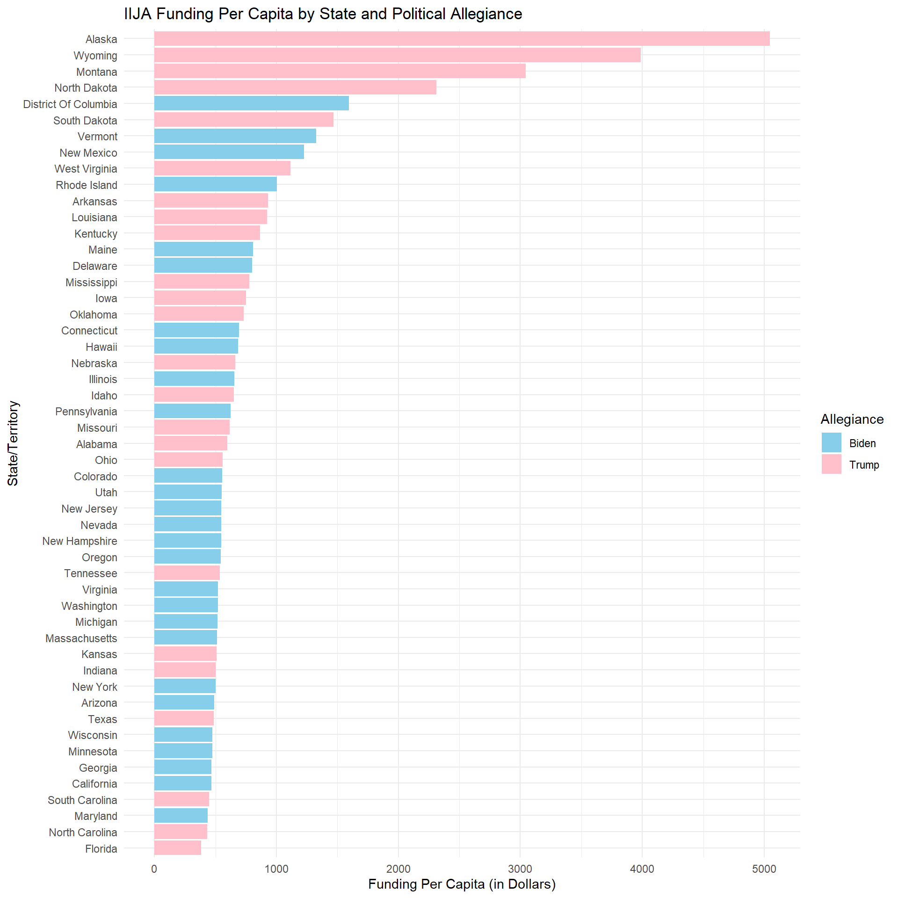
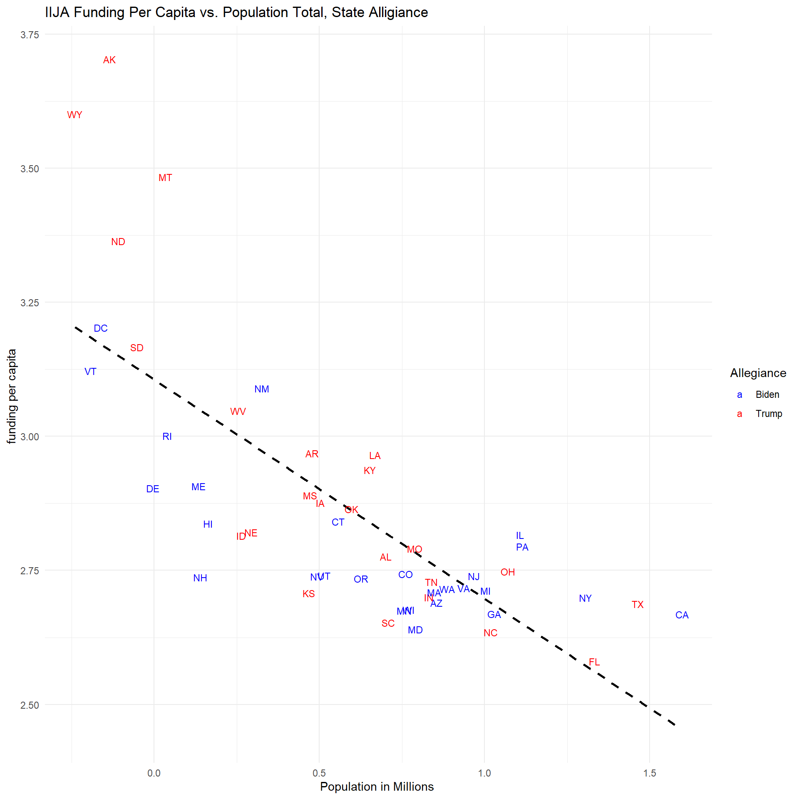

Data Story 1: IIJA Funding & Biden Administration Analysis
Author
Darwhin Gomez
Data analysis on Biden allocated IIJA funds based on political alignment, showing an equitable distribution across states regardless of party affiliation.
The Infrastructure Investment and Jobs Act (IIJA), enacted in 2021, allocates $1.2 trillion to modernize U.S. infrastructure, including transportation, broadband, and clean energy initiatives. The funding aims to enhance economic growth, resilience, and sustainability through long-term investments in critical public systems.
Introduction
This analysis examines the distribution of IIJA funds across U.S. states and territories, assessing whether funding allocation aligns with political party support in the 2020 presidential election. By integrating electoral votes, population data, and funding amounts, the study evaluates fairness and trends in infrastructure investment.
Data Prep
The data preparation phase involves cleaning and standardizing datasets from multiple sources, including IIJA funding records, 2020 population counts, and presidential election results. Necessary transformations include fixing state name discrepancies, handling missing values, and merging datasets to enable meaningful comparisons.
Feature Engineering
To facilitate analysis, new features are created, such as political allegiance based on electoral votes and per capita funding calculations. These transformations help assess whether funding allocation is influenced by state population size or political leanings.
Data Joining
The IIJA funding data is merged with electoral and population datasets to create a unified dataset for analysis. Ensuring correct state name matching and handling inconsistencies ensures accurate cross-referencing across sources.
Code
# Joining the data sets my_data <- elect%>%inner_join(usa_state_territory_pop2020, by ="State_Territory") %>%inner_join(iija_funding, by ="State_Territory")my_data
# A tibble: 51 × 5
State State_Territory Allegiance Total_Population funding_in_billions
<chr> <chr> <chr> <dbl> <dbl>
1 AL Alabama Trump 5024279 3
2 AK Alaska Trump 733391 3.7
3 AZ Arizona Biden 7151502 3.5
4 AR Arkansas Trump 3011524 2.8
5 CA California Biden 39538223 18.4
6 CO Colorado Biden 5773714 3.2
7 CT Connecticut Biden 3605944 2.5
8 DE Delaware Biden 989948 0.792
9 DC District Of Columbia Biden 689545 1.1
10 FL Florida Trump 21538187 8.2
# ℹ 41 more rows
Data Analysis
The study visualizes funding distribution using bar plots and scatterplots to compare IIJA allocations by political allegiance, population size, and per capita distribution. Regression lines and color-coded groupings highlight whether funding follows expected demographic and political patterns.
This bar graph shows the total funding distributed by state. At first glance, it appears that the top beneficiaries of IIJA funding are states that supported Biden.
Code
my_data %>%ggplot(aes(y =reorder(State_Territory, funding_in_billions), x = funding_in_billions, fill = Allegiance)) +geom_bar(stat ="identity") +scale_fill_manual(values =c("Biden"="skyblue", "Trump"="pink")) +theme_minimal() +theme(axis.text.x =element_text(angle =90, hjust =1, vjust =0.5) # Fix tick text alignment ) +labs(title ="2023 IIJA Funding by State and Political Allegiance",x ="Funding in Billions",y ="State/Territory",fill ="Allegiance (2020)" )

This graph displays total funding based on political allegiance in the 2020 election, showing that Biden-backed states received more funding than Trump-backed states. This outcome is expected since Biden won more states in 2020, but a politically biased publication could use a graphic like this to present a very different narrative.
Code
funding_summary <- my_data %>%group_by(Allegiance) %>%summarize(total_funding =sum(funding_in_billions, na.rm =TRUE))# Plot the total funding by Allegianceggplot(funding_summary, aes(x = Allegiance, y = total_funding, fill = Allegiance)) +geom_bar(stat ="identity") +scale_fill_manual(values =c("Biden"="skyblue", "Trump"="pink")) +labs(title ="Total IIJA Funding by Political Allegiance",x ="Allegiance",y ="Total Funding (in Billions)",fill ="Allegiance" ) +theme_minimal()

Total funding and population are plotted after a log transformation to better visualize their relationship, with a regression line fitted. The data shows a general increase in funding as population increases, but some of the most distant points from the regression line highlight deviations from the expected funding predicted by the model. Notably, several red states fall considerably above the regression line, indicating that these states are receiving higher funding than their population alone would predict.
Code
ggplot(my_data, aes(x =log(Total_Population/1000000), y =log(funding_in_billions), color = Allegiance, label = State)) +geom_smooth(method ="lm", color ="black", linetype ="dashed", se =FALSE)+geom_text(vjust =0.5, hjust =0.5, size =3) +# Labels slightly above the pointsscale_color_manual(values =c("Biden"="blue", "Trump"="red")) +# Custom colorslabs(title ="IIJA Funding vs. State Population",x ="Population in Millions log(10)",y ="Funding in Billions log(10)",color ="Allegiance" ) +scale_x_continuous(breaks =seq(0, max(my_data$Total_Population/1000000), by =2))+theme_minimal() # Clean theme

This plot revisits fund distribution, this time on a per capita basis. We observe that many red states benefit from higher per capita funding, with five of the top fifteen states in per capita funding being red states. This suggests that IIJA allocations are not strictly partisan and that factors beyond political allegiance may influence the distribution of infrastructure funds.
Code
# Compute funding per capita (in dollars)my_data <- my_data %>%mutate(funding_per_capita = (funding_in_billions *10^9) / Total_Population) # Create bar plotggplot(my_data, aes(x =reorder(State_Territory, funding_per_capita), y = funding_per_capita, fill = Allegiance)) +geom_bar(stat ="identity") +scale_fill_manual(values =c("Biden"="skyblue", "Trump"="pink")) +coord_flip() +labs(title ="IIJA Funding Per Capita by State and Political Allegiance",x ="State/Territory",y ="Funding Per Capita (in Dollars)", fill ="Allegiance" ) +theme_minimal()

The final plot examines the relationship between funding per capita and total population in a log10 transformation. Interestingly, the data shows a negative relationship, where states with larger populations tend to receive lower per capita funding. This suggests a non-equitable distribution of funds based on population and points to additional factors influencing how IIJA funding is allocated.
Code
ggplot(my_data, aes(x =log10(Total_Population/1000000), y =log10(funding_per_capita), color = Allegiance, label = State)) +geom_smooth(method ="lm", color ="black", linetype ="dashed", se =FALSE)+geom_text(vjust =0.5, hjust =0.5, size =3) +# Labels slightly above the pointsscale_color_manual(values =c("Biden"="blue", "Trump"="red")) +# Custom colorslabs(title ="IIJA Funding Per Capita vs. Population Total, State Alligiance",x ="Population in Millions ",y ="funding per capita ",color ="Allegiance" ) +theme_minimal() # Clean theme

Conclusion
The analysis suggests that IIJA funding distribution is influenced by factors beyond political allegiance or total population, with smaller population red states often receiving higher per capita funding. Further data, such as state economic conditions and ongoing infrastructure projects, could provide more insight into what drives these allocations. However, it is clear that the funds allocated do not favor the political interests of the Biden administration.